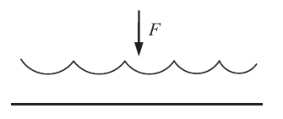
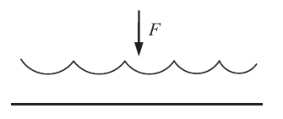
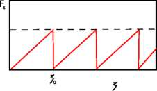

Introducción a la Física de
Materiales Granulares
Historia, aplicaciones industriales, desafíos y estructura del curso.
MARCOS A. MADRID
CONICET — Departamento de Ingeniería Mecánica
UTN FRLP
Definición
Colección de partículas macroscópicas sólidas (granos) que interactúa con sus vecinas principalmente por fricción y colisiones.
Características:
- Tamaño mínimo: $100\;\mu\text{m}$.
- Tamaño máximo: $\sim$ km.
- Sin efecto de fluctuaciones térmicas.
- Disipación.
Escalas e interacciones
Agitación térmica
Van der Waals
Humedad
Arrastre del aire
Fricción
Colisión
Ejemplos
Ejemplos

Ejemplos
Historia
| 1493-1515 | Leonardo da Vinci: leyes de fricción |
| 1773 | Charles Coulomb: Leyes de fricción seca [Acad. Roy. Sci. Mem. Phys. Divers Savants 7, 343 (1773)]. |
| 1787 | Ernst Chladni: Figuras complementarias |
| 1831 | Michael Faraday: Vibración de una pila de arena [Philos. Trans. Roy. Soc. London 52, 299 (1831)]. |
| 1857 | William Rankine: Estados activos y pasivos. |
| 1852-1906 | G. H. L. Hagen (1852), I. Roberts (1884), H. Janssen (1895), Lord Rayleigh (1906): Presión en silos. |
| 1885 | Osborne Reynolds: Dilatancia. |
| 1941 | Ralph A. Bagnold: Números adimensionales ["The physics of blown sand and desert dunes" (1941)]. |
| 1961 | W. A. Beverloo: Descarga de silos. |
| Recientes | S. Nagel, E. Clement, J. Duran, R. Behringer, R. L. Brown, J. C. Richards, H. M. Jaeger, I. Goldhirsch, S. Luding, H. Herrmann, D. Bideau, T. Poeschel, A. Mehta, R. M. Nedderman, S. Edwards... |
Ejemplos
Importancia
- Mundialmente se manipulan $10{,}000{,}000{,}000$ Tn por año (1999)$^1$.
- $10\,\%$ energía total producida es consumida en el procesamiento y manipulación de granos$^{1,2}$.
- Cerca del $40\,\%$ de la capacidad de las plantas industriales es desperdiciado$^3$.
- Más del $50\,\%$ de los productos vendidos son granos o involucran granos en su producción$^4$.
- Sólo en cereales $2{,}000{,}000{,}000$ Tn, producción promedio de los últimos 20 años$^5$.
2: Ennis, B. J., Green, J., Davies, R. (1994): Particle technology. Chem. Eng. Prog. 90, 32-43.
3: Holdich, R. (2006): Fundamentals of Particle Technology. Midland Information & Publishing.
4: Bates, L. (2006): The need for industrial education in bulk technology. Bulk Solids Handl. 26, 464-473.
5: FAO (Food and Agriculture Organization of the United Nations)
Algunos ámbitos de aplicación
- Agricultura: Procesamiento, transporte y almacenamiento (bloqueos de flujo, segregación)
- Construcción: Extracción (canteras o depósitos subacuáticos), transporte (cintas o cañerías), separación de residuos, trituración y molienda, tamizado, almacenamiento.
- Industria farmacéutica: Obstrucciones y problemas de segregación
- Grandes cantidades de material granular o en forma de polvos (mismos problemas que en construcción)
- Materiales preparados en pequeñas cantidades de alto valor (pureza, reproducibilidad)
- Industria alimenticia: Dosificación, empaque, transporte, ....
Unidad 1: Leyes de contacto — Tribología
- Leyes de Coulomb-Amontons.
- Respuesta mecánica de materiales.
- Contacto de Hertz (esfera plano).
- Contacto con asperezas. Contacto tangencial.
- Fricción de rodadura.
- Modelos microscópicos.
- Colisiones.
- Modelos de fuerzas para simulación.
Experimentos de Leonardo da Vinci (1493)
Experimentos de Leonardo da Vinci
Observaciones:
- $F_{Ts}$ no depende del área de contacto
- $F_{Ts} \propto N$
- Cuando hay movimiento, $F_{Td} < F_{Ts}$
Amontons (1699)
Observaciones:
- $F_{Ts}$ no depende del área de contacto
- $F_{Ts} \propto N$
- Cuando hay movimiento, $F_{Td} < F_{Ts}$
Leyes de Coulomb-Amontons (1785)
- Fuerza tangencial mínima para el movimiento: $|\boldsymbol{R}_{Ts}| = \mu_s |\boldsymbol{R}_N|$.
$\mu_s$: coeficiente estático de fricción. - Cuando no hay movimiento relativo, la fuerza de fricción se desconoce a priori:
$|\boldsymbol{R}_{Ts}| \leq \mu_s |\boldsymbol{R}_N|$.
Leyes de Coulomb-Amontons (1785)
- Cuando hay deslizamiento: $|\boldsymbol{R}_{Td}| = \mu_d |\boldsymbol{R}_N|$.
$\mu_d$: coeficiente dinámico de fricción.
La fuerza de fricción se ejerce en sentido opuesto al movimiento (no depende de la velocidad) - $\mu_s$ y $\mu_d$ son aproximadamente constantes y dependen de los materiales en contacto.
Típicamente, $0{,}1 < \mu_d \leq \mu_s < 1$ (Euler)
Leyes de Coulomb (comentarios)
Hay una dependencia con el tiempo de envejecimiento del contacto.
Ver: V.L. Popov. Contact Mechanics and Friction: Physical Principles and Applications. Springer Berlin Heidelberg, 2017, Capítulo 10.4 - 10.10.
Leyes de Coulomb (comentarios)
Hay una dependencia con temperatura.
Leyes de Coulomb (comentarios)
La dependencia lineal entre fuerza de fricción y la normal es válida por muchos órdenes de magnitud entre metales.
Leyes de Coulomb (comentarios)
Deja de ser válida la dependencia lineal entre fuerza de fricción y la normal por ejemplo entre acero y teflon.
Leyes de Coulomb (comentarios)
La independencia del coeficiente de fricción con la velocidad es válido cuando las velocidades no son ni muy grandes, ni muy chicas.
Leyes de Coulomb (comentarios)
Rugoso $\simeq$ fricción, liso $\simeq$ no (tanta) fricción.
Respuesta mecánica de materiales
Módulo de elasticidad o módulo de Young $E = \sigma/\epsilon$
(en el régimen elástico).
- Estrés $\sigma = F/A$.
- Deformación $\epsilon = \delta l / l_0$.
- Tensión de fluencia $\sigma_c$.
Respuesta mecánica de materiales
Coeficiente de Poisson $\nu = \epsilon_\perp / \epsilon_\parallel$.
Respuesta mecánica de materiales
Módulo de cizalladura $G = \sigma_{xy}/\gamma_{xy}$.
- Tensión de cizalla en el régimen elástico $\sigma_{xy} = F/A$.
- Deformación de cizalla $\gamma_{xy} = \delta x / l$.
Respuesta mecánica de materiales
Dureza $\sigma_0 = F/A$ en el régimen plástico o de fluencia. $\sigma_0 \approx 3\sigma_c$.
Contacto de Hertz (esfera – plano)
Área de contacto $A = \pi a^2 \approx 2\pi R d$. Donde $a \approx \sqrt{2Rd}$.
- Si la deformación es elástica y la suponemos concentrada en el área de contacto, entonces la deformación relativa $$\epsilon \approx d/(2a) \implies \sigma \approx Ed/(2a).$$
Luego, la fuerza entre cuerpos es
$$F = \sigma A \approx \frac{Ed\pi a^2}{2a} \approx \frac{Ed\pi}{2}\sqrt{2Rd} = \frac{\pi}{\sqrt{2}} E d^{3/2} R^{1/2}.$$El cálculo exacto da como resultado
$F = \frac{4}{3} E d^{3/2} R^{1/2}$.
- Si la deformación es plástica
$\sigma_0 = F/A \implies F = 2\pi\sigma_0 R d$
Contacto con asperezas (Greenwood - Williamson)
 

- Si todas las asperezas son iguales y asumimos que se deforman elásticamente se obtiene que el área de contacto real es proporcional a $F_N^{2/3}$.
- Si suponemos que hay una distribución en las alturas de las asperezas entonces el área real de contacto entre cuerpos es aproximadamente proporcional a $F_N$.
- Si asumimos que la deformación es plástica en las asperezas entonces el área real de contacto $A \approx F_N / \sigma_0$
Ver: V.L. Popov. Contact Mechanics and Friction. Springer Berlin Heidelberg, 2017, Capítulo 7.
Contacto tangencial (esfera-plano)
- Cuando se agrega una fuerza tangencial se crean dos regiones: una de deslizamiento ($\tau > \mu p$) y otra de adhesión ($\tau < \mu p$).
- Fretting: Desgaste por la frotación en la zona de deslizamiento ante cargas tangenciales cíclicas.
Ver: V.L. Popov. Contact Mechanics and Friction. Springer Berlin Heidelberg, 2017, Capítulo 8.
Fricción de rodadura


- $F = \mu_r F_N$
- La velocidad de rotación $v$ tiene una componente rígida más una elástica. Como consecuencia, la velocidad circunferencial de la rueda es más rápida que la velocidad de traslación en la aceleración y menor en el frenado.
$v_{\text{fluencia}} = v - \omega R$
Ver: V.L. Popov. Contact Mechanics and Friction. Springer Berlin Heidelberg, 2017, Capítulo 9.
Modelos microscópicos (Coulomb)
- Equilibrio $\implies F = F_N \tan\theta \implies F_{\max} = F_N \tan\theta_{\max} \implies \mu_{\max} = \tan\theta_{\max}$
Donde $\theta_{max}$ es el máximo ángulo de la superficie. - Si este modelo fuera correcto, ¿por qué el coeficiente de fricción estático $\mu_s$ no depende mucho de la rugosidad de las superficies?
Ver: V.L. Popov. Contact Mechanics and Friction. Springer Berlin Heidelberg, 2017, Capítulo 10.
Modelos microscópicos (Bowden-Tabor)
Si asumimos que las asperezas sufren deformación plástica entonces $A \approx F_N/\sigma_0$, donde $A$ es el área real de contacto y $\sigma_0$ es la dureza del material.
Si $\tau_c$ es la tensión de cizalla máxima necesaria para hacer fluir un contacto ($\tau_c = \sigma^0_{xy}$ es la tensión de cizalla en la fluencia).
Se cumple en general para los materiales que $\tau_c \approx \sigma_c/\sqrt{3} = \sigma_0/3/\sqrt{3} \implies \mu_s \approx 0{,}2$.
Donde $\sigma_c$ es la tensión para fluencia en tracción.
Esta estimación no permite explicar el rango amplio de valores de $\mu_s$ posibles.
Modelos microscópicos (Prandtl-Tomlinson)
$F_s = N$ porque si $N < F$ no hay solución estática.
Ver: V.L. Popov. Contact Mechanics and Friction. Springer Berlin Heidelberg, 2017, Capítulo 11.
Inestabilidad (stick-slip)
Ver: V.L. Popov. Contact Mechanics and Friction. Springer Berlin Heidelberg, 2017, Capítulo 11.3.
Colisiones
- Conservación del momento lineal y angular en todas las colisiones.
- La energía cinética puede no conservarse y dar lugar a colisiones inelásticas.
Coeficiente de restitución:
Solución:
$\begin{cases} m_1 u_1 + m_2 u_2 = m_1 v_1 + m_2 v_2 & \text{(conservación momento)} \\ v_1 - v_2 = -\varepsilon(u_1 - u_2) & \text{(restitución)} \end{cases}$
$v_1 = \dfrac{\varepsilon m_2(u_2 - u_1) + m_1 u_1 + m_2 u_2}{m_1 + m_2};\quad v_2 = \dfrac{\varepsilon m_1(u_1 - u_2) + m_1 u_1 + m_2 u_2}{m_1 + m_2}$
Colisiones (esferas)
La velocidad relativa $g_{ij}$ en el punto de contacto entre dos esferas de radio $R$ es
$\boldsymbol{g}_{ij} = (\boldsymbol{v}_i - \boldsymbol{\omega}_i \times R\boldsymbol{n}_{ij}) - (\boldsymbol{v}_j - \boldsymbol{\omega}_j \times R\boldsymbol{n}_{ij}) = \boldsymbol{v}_{ij} - R(\boldsymbol{\omega}_i + \boldsymbol{\omega}_j) \times \boldsymbol{n}_{ij}$
donde $\quad \boldsymbol{v}_{ij} = \boldsymbol{v}_i - \boldsymbol{v}_j;\qquad \boldsymbol{n}_{ij} = \dfrac{\boldsymbol{r}_i - \boldsymbol{r}_j}{|\boldsymbol{r}_i - \boldsymbol{r}_j|}$
y las componentes normales y tangenciales de $g_{ij}$ al punto de contacto son
$g^n_{ij} = (\boldsymbol{g}_{ij} \cdot \boldsymbol{n}_{ij})\boldsymbol{n}_{ij}$
$\boldsymbol{g}^t_{ij} = -\boldsymbol{n}_{ij} \times (\boldsymbol{n}_{ij} \times \boldsymbol{g}_{ij}) = \boldsymbol{g}_{ij} - g^n_{ij}$
Colisiones (esferas)
Los coeficientes de restitución normal y tangencial se definen como
(primas significan después de la colisión)
$(g^t_{ij})' = \varepsilon^t g^n_{ij} \qquad -1 \leq \varepsilon^t \leq 1$
y la conservación del momento lineal y angular es (para masas $m$ y momento de inercia $I$ iguales)
$\boldsymbol{v}'_i + \boldsymbol{v}'_j = \boldsymbol{v}_i + \boldsymbol{v}_j$
$mR(\boldsymbol{n}_{ij} \times \boldsymbol{v}'_i + I\boldsymbol{\omega}'_i) = mR(\boldsymbol{n}_{ij} \times \boldsymbol{v}_i + I\boldsymbol{\omega}_i)$
Las dos últimas ecuaciones son la conservación del momento angular para cada partícula alrededor del punto de contacto (donde no hay torque y esta separación es válida).
Colisiones (esferas)
La solución, tomando $\bar{I} \equiv I/(mR^2)$ como el momento de inercia reducido
(ver T. Poeschel, Computational Granular Dynamics)
$\boldsymbol{v}'_j = \boldsymbol{v}_j + \dfrac{1+\varepsilon^n}{2}\boldsymbol{g}^n_{ij} - \dfrac{\bar{I}(\varepsilon^t - 1)}{2(\bar{I}+1)}\boldsymbol{g}^t_{ij}$
$\boldsymbol{\omega}'_i = \boldsymbol{\omega}_i - \dfrac{\varepsilon^t - 1}{2R(\bar{I}+1)}(\boldsymbol{n}_{ij} \times \boldsymbol{g}^t_{ij})$
$\boldsymbol{\omega}'_j = \boldsymbol{\omega}_j - \dfrac{\varepsilon^t - 1}{2R(\bar{I}+1)}(\boldsymbol{n}_{ij} \times \boldsymbol{g}^t_{ij})$
Valores de $\varepsilon^n$
- $\varepsilon^n$ depende de la velocidad de colisión normal $g^n_{ij}$.
- Si se conoce la fuerza de interacción entre las partículas $F(\xi, \dot{\xi})$ como función de la penetración $\xi$ y su derivada, se puede calcular $\varepsilon^n$ resolviendo la ecuación de Newton $$m_e\ddot{\xi}(t) = F(\xi(t), \dot{\xi}(t)),\quad \dot{\xi}(0) = |g^n_{ij}|,\; \xi(0) = 0$$
- Si se conoce la fricción por rodadura $\mu_r$, se puede calcular $\varepsilon^n$ usando (ver Brilliantov, EPJB (1999)) $$\frac{1 - \varepsilon^n}{2{,}28(\rho/m)^{2/5}|g^n_{ij}|^{1/5}} = \frac{\mu_r}{V}$$ donde $V$ es la velocidad lineal de rodadura y $\rho = \dfrac{2Y}{3(1-\nu^2)}\dfrac{\sqrt{R^*}}{m_e}$ con $Y$ el módulo de Young y $\nu$ el coeficiente de Poisson.
Valores de $\varepsilon^t$
- Si $\varepsilon^t > 0 \longrightarrow$ deslizamiento; si $\varepsilon^t < 0 \longrightarrow$ inversión de rotación.
- Si $g^n_{ij} \to 0$ la fuerza normal es pequeña y la tangencial también por lo que $\varepsilon^t \to 1$.
- Si $g^n_{ij}$ crece la normal y la tangencial crecen por lo que si $g^t_{ij}$ es pequeña no habrá deslizamiento sino rodadura perfecta. Si hay inversión de rotación $\varepsilon^t < 0$ el valor de $\varepsilon^t$ no puede llegar a $-1$ porque parte de la energía se pierde en la deformación normal.
- Si aplicamos el criterio de Coulomb $F^t_{\max} = \mu_s F^n$ entonces la rodadura se produce si $F^t < \mu_s F^n$ y el deslizamiento si $F^t > \mu_s F^n$. Se puede representar un "cono de Coulomb" en el contacto con ángulo $\theta = \text{tg}^{-1}(\mu_s)$. Si $F \in$ al cono habrá rodadura, si no habrá deslizamiento.
- Dos esferas nunca pueden tener $\varepsilon^t = 1$ para todo $g^n_{ij}$ aún siendo perfectamente suaves.
Modelos de fuerzas para simulación (normales)
- Hertz: Fuerza normal basado en la deformación de esferas elásticas sin roce. $$F^n = \frac{2Y\sqrt{R^*}}{3(1-\nu^2)}\xi^{3/2},\quad \frac{1}{R^*} = \frac{1}{R_1} + \frac{1}{R_2},\quad \xi = \text{deformación normal}$$
- Lineal: $$F^n = Y\xi$$
- Walton-Braun: Deformación plástica permanente $\xi_0$ $$F^n = \begin{cases} Y_l\xi & \text{si } \dot{\xi} \geq 0 \\ Y_u(\xi - \xi_0) & \text{si } \dot{\xi} < 0 \end{cases}$$
- Spring-dashpot: $$F^n = Y\xi + \gamma^n\dot{\xi}$$ Esta fuerza lleva a un coeficiente de restitución normal $$\varepsilon^n = \exp\left[\frac{-\pi\gamma^n}{2m^*}\left(\frac{Y}{m^*} - \left(\frac{\gamma^n}{2m^*}\right)^2\right)^{-1/2}\right]$$ que claramente no depende de la velocidad de la colisión $\dot{\xi}$.
Modelos de fuerzas para simulación (normales)
- Hertz-Kuwabara-Kono: (ver también Brilliantov, Phys. Rev. E (1996))
$$F^n = \frac{2Y\sqrt{R^*}}{3(1-\nu^2)}(\xi^{3/2} + A\sqrt{\xi\dot{\xi}})$$
donde $A$ depende de la viscosidad del material de las esferas.
Esta fuerza lleva a un coeficiente de restitución normal más realista $$\varepsilon^n = 1 + C_1 A\rho^{2/3}g^{n\,1/3}_0 + C_2 A^2\rho^{4/3}g^{n\,2/3}_0 + \ldots$$ donde $g^n_0$ es la velocidad normal de colisión y $\rho = \dfrac{2Y}{3(1-\nu^2)}\dfrac{\sqrt{R^*}}{m_e}$;
$C_1 = -1{,}15344$; $C_2 = 0{,}79826$; $C_3 = -0{,}48358$; $C_4 = 0{,}28528$; ...
Modelos de fuerzas para simulación (normales)
Duración de una colisión
Modelos de fuerzas para simulación (tangenciales)
- Haff-Werner: $$F^t = -\text{sign}(\boldsymbol{v}^t_{ij})\min[\gamma^t|\boldsymbol{v}^t_{ij}|;\; \mu|\boldsymbol{F}^n|]$$ Este modelo no representa bien el caso de partículas que están en reposo en el contacto ya que $F^t = 0$ en ese caso y no es capaz de considerar así la fricción estática.
- Brilliantov:
$$F^t = -\mu F^n \left[\frac{\zeta}{\zeta_0} - \text{int}\left(\frac{\zeta}{\zeta_0}\right)\right]$$ donde $\zeta_0$ es la longitud típica de una aspereza y debe ser mucho menor a la deformación tangencial total típica durante una colisión.
Modelos de fuerzas para simulación (tangenciales)
Cundall-Strack:
$$F^t = -\text{sign}(\boldsymbol{v}^t_{ij})\min[k^t\zeta;\; \mu|\boldsymbol{F}^n|]$$donde $\zeta(t)$ es la deformación tangencial desde el inicio del contacto
$$\zeta(t) = \int_{t_0} \boldsymbol{v}^t_{ij}(t')\,\text{d}t'$$– Este modelo da resultados razonables si $k^t/Y \approx 2/7$, donde $Y$ es el coeficiente del resorte lineal para la parte normal en un modelo Spring-dashpot.
– Notar que el resultado del efecto tangencial depende fundamentalmente de la fase en que termina la oscilación cuando termina el contacto. Esto es, depende de $T^t/T^n$ (cociente del período de oscilación tangencial y normal) que es proporcional a $k^t/Y$.
Bibliografía
- B. Andreotti, Y. Forterre y O. Pouliquen. Granular Media: Between Fluid and Solid. Cambridge University Press, 2013.
- Jacques Duran. Sands, powders, and grains: an introduction to the physics of granular materials. New York: Springer, 2000.
- V.L. Popov. Contact Mechanics and Friction: Physical Principles and Applications. Springer Berlin Heidelberg, 2017.